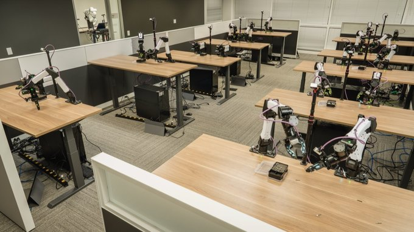

In Submission

I am an undergraduate student in Engineering Mechanics at Shanghai Jiao Tong University, where I am advised by Prof. Daolin Ma, and I am currently conducting research at Carnegie Mellon University with Prof. Howie Choset. I am also working closely with Prof. Guanya Shi.
My research interests lie in robotic manipulation, dexterous manipulation, deformable object modeling, and skill learning for long-horizon tasks. In particular, I am interested in building robotic systems that can robustly perceive and manipulate complex deformable objects in real-world environments.


Scan to add me on WeChat